1. ĐỊNH HƯỚNG THIẾT KẾ GIAO DIỆN VÀ NHẬN DIỆN THƯƠNG HIỆU
Giao diện VAMOS STORE được xây dựng theo phong cách Modern Kinetic UI, hướng tới đối tượng khách hàng trẻ trung, năng động yêu thích thể thao và sneaker thời thượng.
- Quy chuẩn bảng màu (60-30-10): 60% Nền trắng tinh khiết (
#FFFFFF), 30% Chữ than chì đậm (#111827) và 10% Màu đỏ thương hiệu (#E11B22) làm điểm nhấn hành động (CTA, giảm giá, badge nổi bật). - Typography: Tiêu đề chính sử dụng phông chữ thể thao hiện đại Space Grotesk, nội dung chi tiết sử dụng Inter / System font dễ đọc trên mọi màn hình.
- Tối ưu hóa ảnh sản phẩm: Khung hiển thị tỉ lệ vuông (
aspect-square), ảnh giày thể thao bọc nền trắng studio trong suốt tạo cảm giác cao cấp và đồng nhất.
2. SƠ ĐỒ ĐIỀU HƯỚNG MÀN HÌNH (SITEMAP)
Sơ đồ điều hướng thể hiện cấu trúc cây phân tầng logic từ Trang chủ qua các danh mục, trang mua sắm, tài khoản và khu vực quản trị:
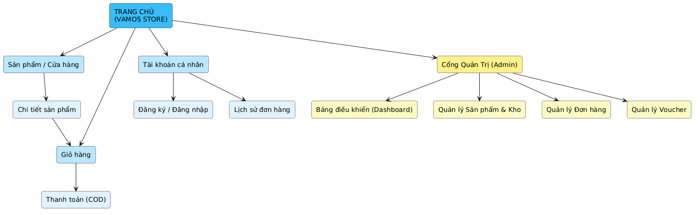
3. BẢN VẼ WIREFRAME VÀ ĐẶC TẢ 16 MÀN HÌNH CHUẨN THỰC THI (GOOGLE STITCH HIGH-FIDELITY)
3.1. UI-01: Trang chủ (Home Page)
Màn hình trang chủ tiếp cận khách hàng với Hero Banner quảng bá, danh mục nổi bật, danh sách sản phẩm mới nhất và footer chính sách:
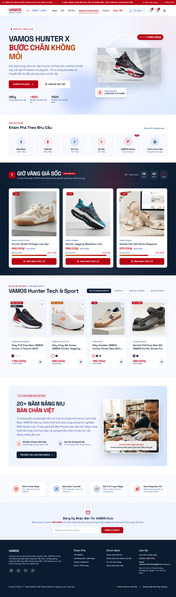
3.2. UI-02: Cửa hàng & Bộ lọc đa tiêu chí (Shop & Filter)
Thanh lọc bên trái (Sidebar Filter) cho phép lọc nhanh theo Giới tính, Kích cỡ giày, Màu sắc, Khoảng giá và sản phẩm đang giảm giá:
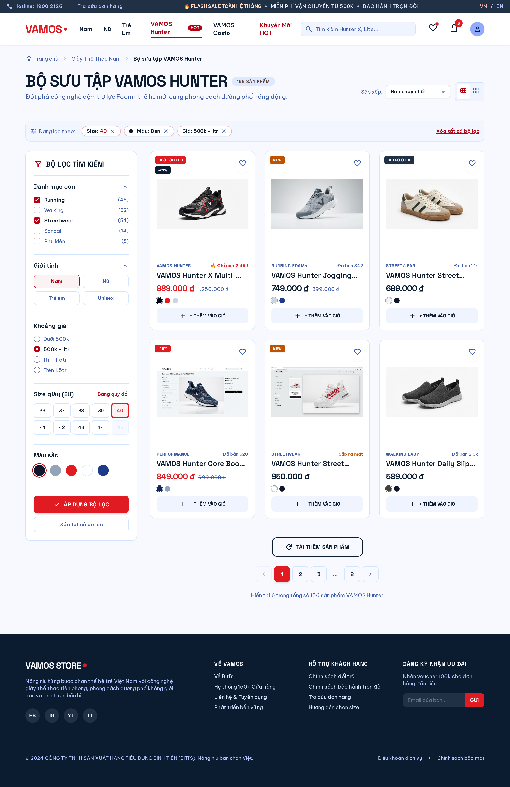
3.3. UI-03: Chi tiết sản phẩm & Biến thể Size/Màu (Product Detail)
Bộ sưu tập ảnh đa góc độ, bộ chọn kích cỡ và màu sắc giày, cảnh báo tồn kho thời gian thực và nút "Thêm vào giỏ" / "Mua ngay":
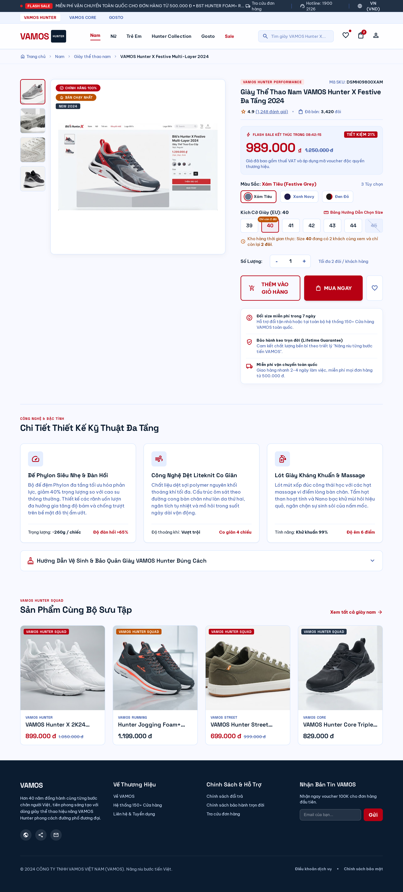
3.4. UI-04: Giỏ hàng trực tuyến & Tóm tắt đơn (Shopping Cart & Summary)
Hiển thị danh sách sản phẩm trong giỏ, điều chỉnh số lượng mua (giới hạn 1-10 đôi), tính tạm tính và đồng bộ giỏ vãng lai:
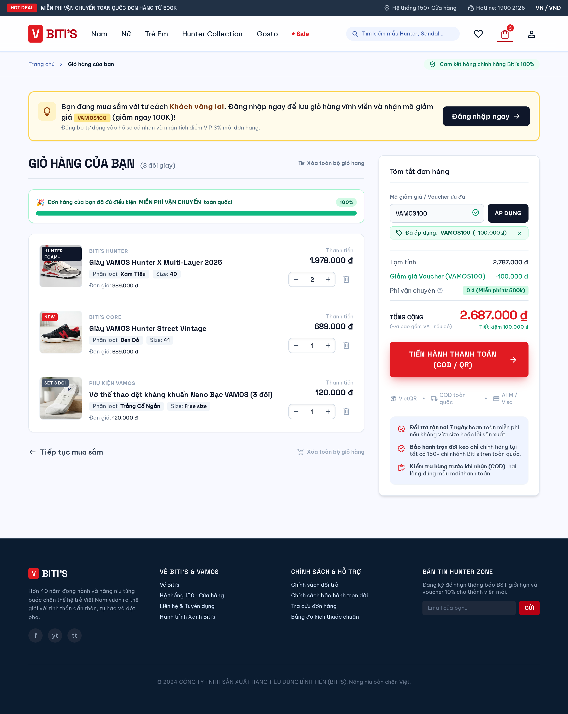
3.5. UI-05: Đặt hàng thanh toán COD an toàn (Checkout COD)
Chọn địa chỉ nhận hàng, áp dụng mã voucher ưu đãi và chốt đơn thanh toán khi nhận hàng bằng tiền mặt:
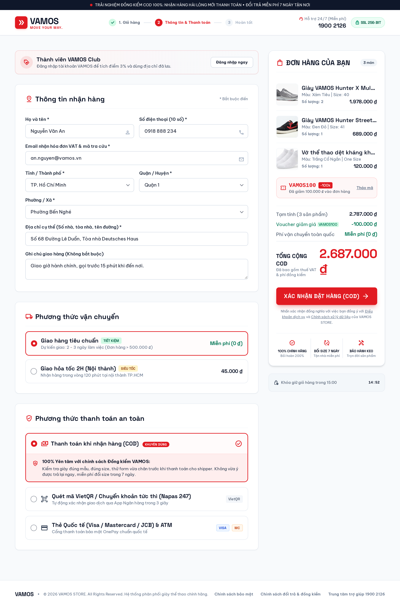
3.6. UI-06: Đăng nhập & Đăng ký tài khoản (Auth Portal)
Modal chuyển đổi mượt mà giữa Đăng nhập và Đăng ký, hỗ trợ kiểm tra định dạng email và bảo mật với CSRF Token:
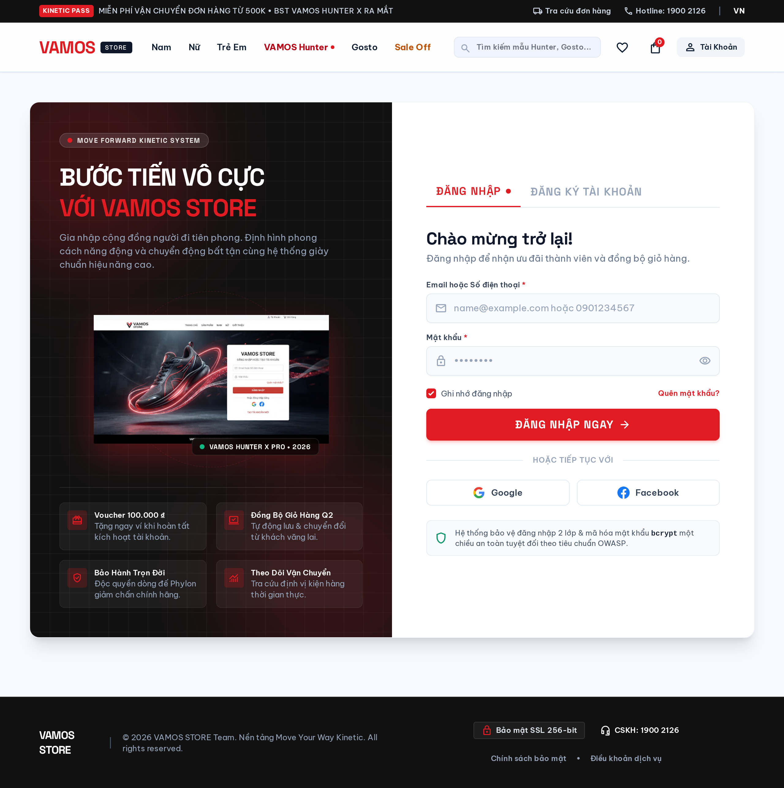
3.7. UI-07: Lịch sử đơn hàng cá nhân (Order History)
Khách hàng theo dõi dòng thời gian tiến trình đơn hàng (Timeline 5 bước), xem snapshot sản phẩm và hủy đơn khi ở trạng thái PENDING:
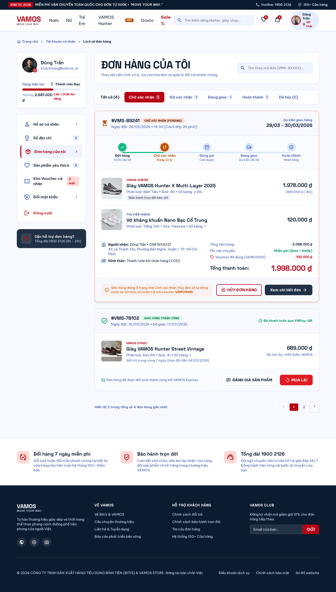
3.8. UI-08: Admin Dashboard tổng quan (Admin Overview & KPI)
Bảng điều khiển quản trị thống kê doanh thu thực tế, cảnh báo đơn chờ duyệt và danh sách biến thể sắp hết hàng dưới 5 đôi:
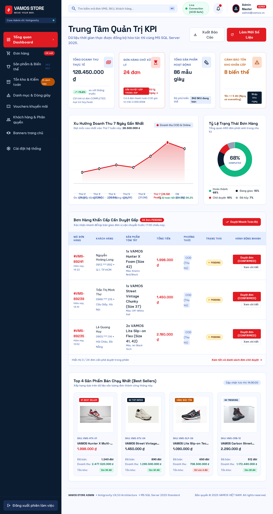
3.9. UI-09: Admin Quản lý sản phẩm & Biến thể (Admin Products & Matrix)
Giao diện quản lý danh mục, thiết lập ma trận biến thể giày Kích cỡ x Màu sắc x SKU x Tồn kho x Giá phụ thu:
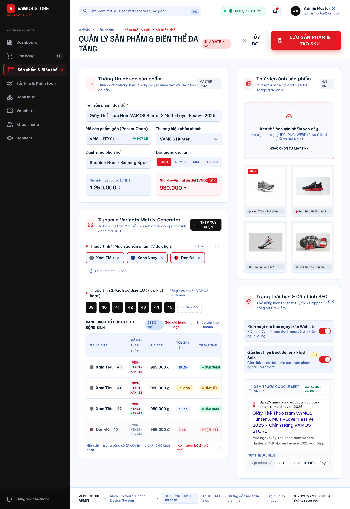
3.10. UI-10: Admin Vận hành đơn hàng (Admin Orders & State Machine)
Lọc đơn theo tab trạng thái, xem chi tiết giao nhận, duyệt chuyển trạng thái tuần tự và hủy đơn hàng kèm tự động hoàn kho:
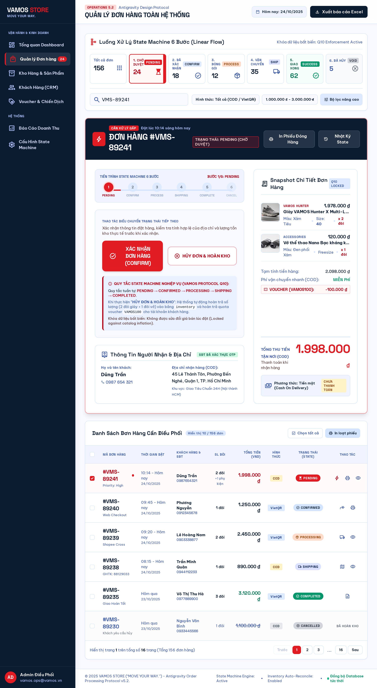
3.11. UI-11: Quản lý Danh mục & Thương hiệu (Admin Categories & Brands)
Bảng điều khiển quản trị danh mục sản phẩm (Sneaker Nam, Sneaker Nữ, Giày Thể Thao, Sandal & Dép) và thương hiệu phân phối chính hãng:
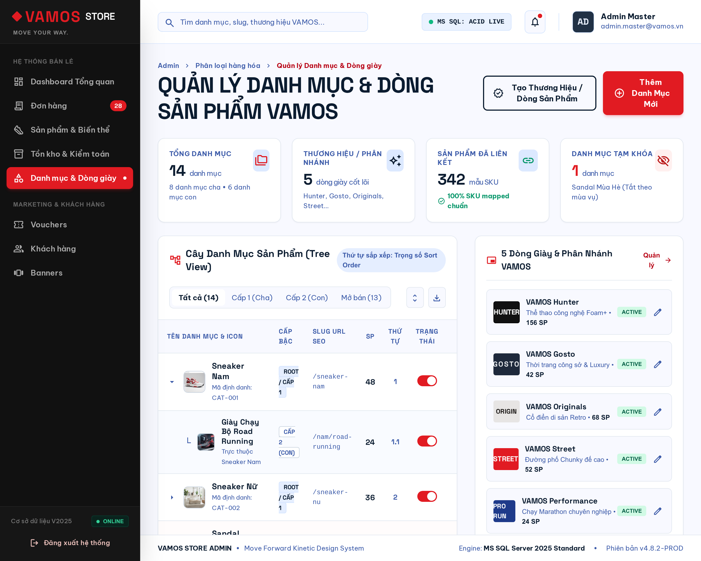
3.12. UI-12: Quản lý Tồn kho & Kiểm toán Biến động (Inventory Audit & Logs)
Giám sát kho hàng tập trung theo từng SKU biến thể, ghi chép nhật ký xuất nhập tồn kho và kiểm toán nguyên nhân thay đổi số lượng:
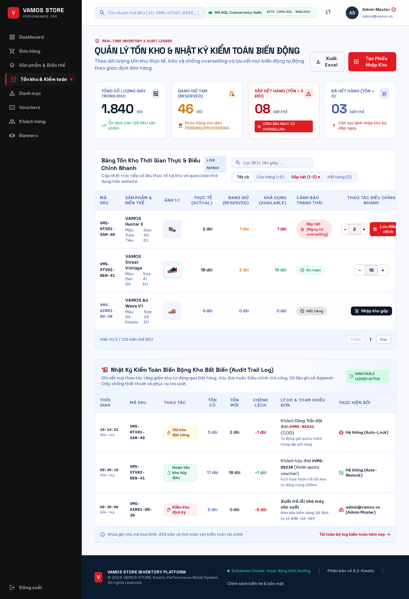
3.13. UI-13: Quản lý Vouchers & Chiến dịch Khuyến mãi (Voucher Management)
Cấu hình mã giảm giá (theo % hoặc số tiền cố định), thiết lập hạn mức đơn tối thiểu, giới hạn lượt dùng và thời gian hiệu lực:
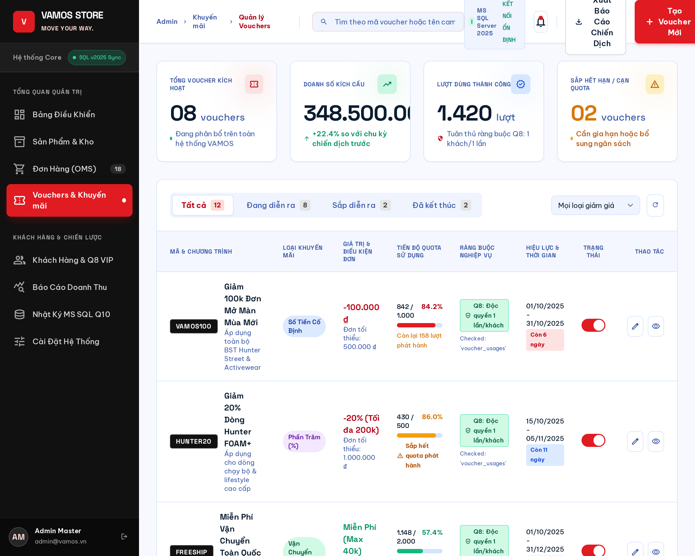
3.14. UI-14: Quản lý Khách hàng & Vô hiệu hóa Phiên (Customer & Session Audit)
Danh sách tài khoản thành viên, lịch sử chi tiêu, phân quyền vai trò và tính năng khóa tài khoản / thu hồi phiên đăng nhập tức thì:
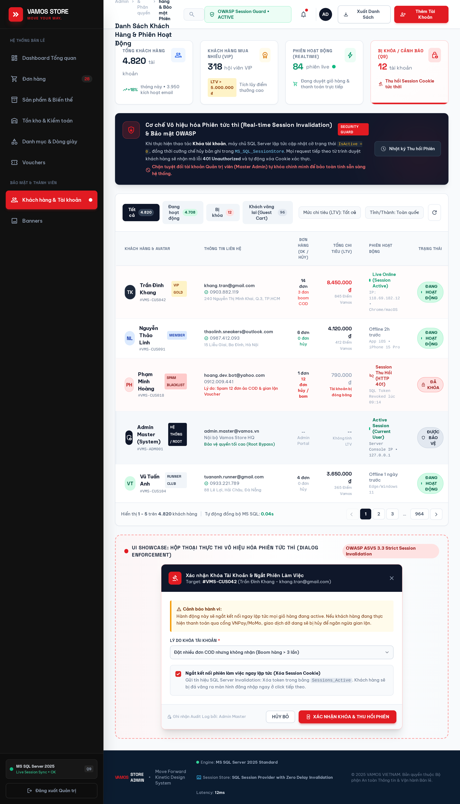
3.15. UI-15: Quản lý Banners & Slider Marketing (Banner Management)
Cập nhật banner quảng cáo trang chủ, thứ tự hiển thị ưu tiên, đường dẫn liên kết bộ sưu tập và kích hoạt/tạm ẩn chiến dịch:
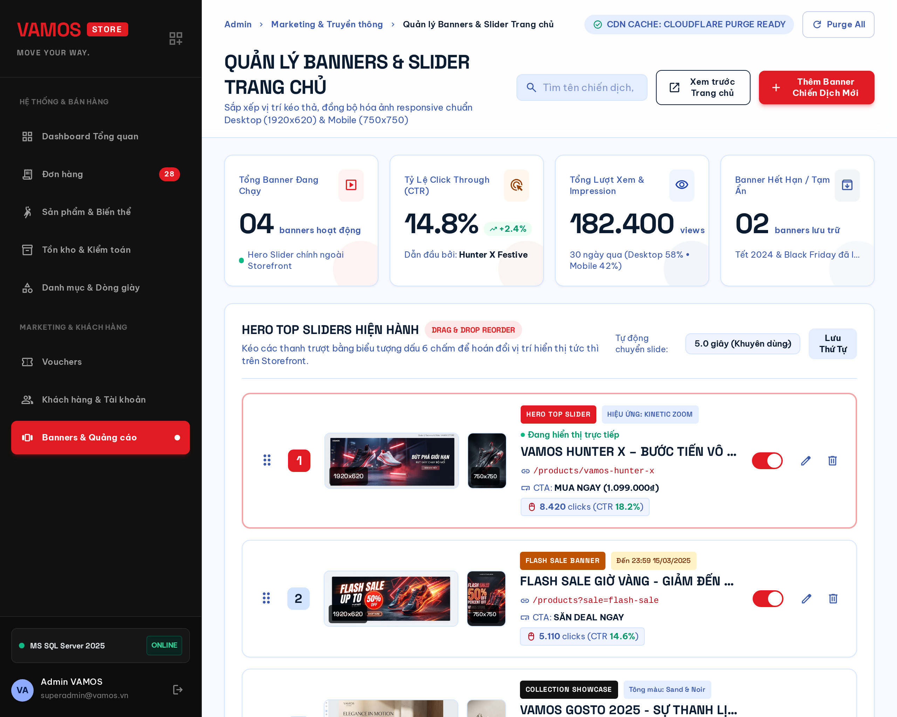
3.16. UI-16: Đăng ký Tài khoản Thành viên Mở rộng (Member Registration)
Màn hình chuyên biệt dành cho đăng ký thành viên mới với kiểm tra độ mạnh mật khẩu thời gian thực, xác nhận điều khoản và kích hoạt tài khoản:
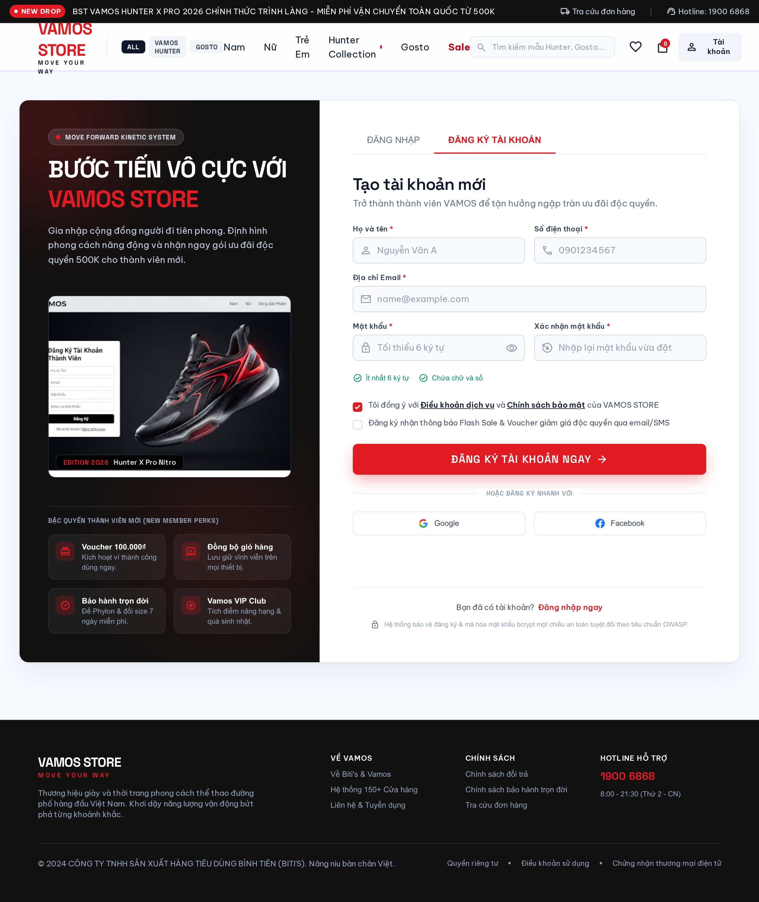
4. KẾT LUẬN
Bộ thiết kế giao diện Lab 4 đáp ứng đầy đủ yêu cầu nghiệp vụ thực tế, đồng bộ 100% với cấu trúc dữ liệu database và mang lại trải nghiệm mua sắm trực quan, hiện đại cho người dùng VAMOS STORE.